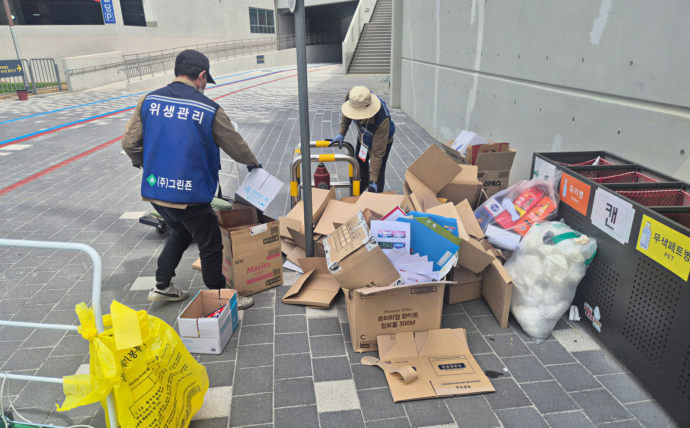

미화원 파견
현장 규모와 운영 시간에 맞는 전문 미화 인력을 배치합니다.
현장 규모와 운영 시간에 맞는 전문 미화 인력을 배치합니다. 작업 전 현장 상태를 확인하고 시설 이용에 방해가 적도록 공정을 계획합니다.

미화원 파견 대상
사무실
회사
관공서
다중시설
공장
현장 규모와 오염 상태에 맞춰 작업 범위와 방법을 결정합니다.

그린죤 미화원 갤러리
업무 환경을 갤러리에서 확인할 수 있습니다.

현장 규모와 운영 시간에 맞는 전문 미화 인력을 배치합니다. 작업 전 현장 상태를 확인하고 시설 이용에 방해가 적도록 공정을 계획합니다.

사무실
회사
관공서
다중시설
공장
현장 규모와 오염 상태에 맞춰 작업 범위와 방법을 결정합니다.
업무 환경을 갤러리에서 확인할 수 있습니다.